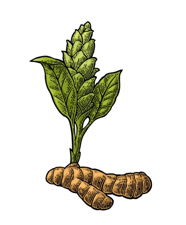

Aloe Vera
Aloe Vera is a succulent plant known for its medicinal properties. It has been used for centuries to heal wounds and soothe skin conditions. The gel inside the leaves is rich in vitamins and antioxidants.
Medicinal Uses: Aloe Vera is commonly used to treat sunburns, wounds, and skin irritations. It also has anti-inflammatory and antibacterial properties.

Turmeric
Turmeric is a golden-yellow spice with powerful medicinal properties. It contains curcumin, a natural anti-inflammatory compound, and is widely used in traditional medicine.
Medicinal Uses: Turmeric has anti-inflammatory and antioxidant effects. It may help in treating conditions like arthritis, digestive issues, and skin disorders.